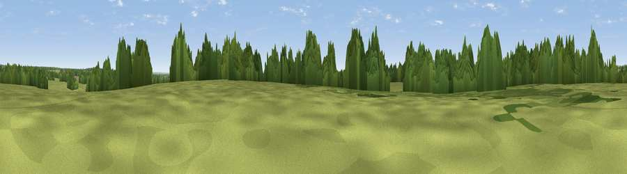

Viewpoint near Stoke Row
#35478 in England · top 49% of its area beats it · near Stoke RowThe view, rendered

A 360° render of this exact spot computed from the terrain model, tree cover and land cover — summer colours, afternoon light, calibrated against photographs of famous viewpoints. Real trees, hedges and buildings will differ in detail.
The panorama
Grey silhouette: terrain skyline in each direction (720 bearings, Earth curvature and refraction included). Dashed green: skyline with trees (+15 m) and buildings (+8 m) as obstacles. Blue strip: how far the ground is visible on each bearing.
Where the view opens
Wedge length = distance to the farthest visible ground on that bearing (vegetation-aware). Rings at 10, 25 and 50 km.
What fills the view
46% grassland · 37% woodland · 15% cropland · 2% built-up
Angular shares of the visible panorama (visual magnitude), not map area. Landscape diversity 0.48 (0–1 Shannon).
Key numbers
More beautiful places nearby
The staircase of upgrades: each row has a higher view potential than everything closer. Driving times are estimates from straight-line distance, calibrated against real road routing — check an actual route before setting out.
| Place | Direction | Drive | Score |
|---|---|---|---|
| Viewpoint near Ipsden | W · 2 km | ~5 min | 49.7 |
| Viewpoint near Nuffield | NNW · 3 km | ~8 min | 54.0 |
| Viewpoint near Nuffield | N · 4 km | ~10 min | 62.3 |
| Viewpoint near Cookley Green | N · 7 km | ~14 min | 64.3 |
| Viewpoint near Cookley Green | NNE · 7 km | ~15 min | 68.5 |
| Viewpoint near Watlington | NNE · 9 km | ~18 min | 70.6 |
| Viewpoint near Lewknor | NNE · 12 km | ~22 min | 70.8 |
| Viewpoint near Lewknor | NNE · 14 km | ~25 min | 74.4 |
51.55836, -1.03818 · source: screening · position refined by local search. Computed location — check access rights before visiting.